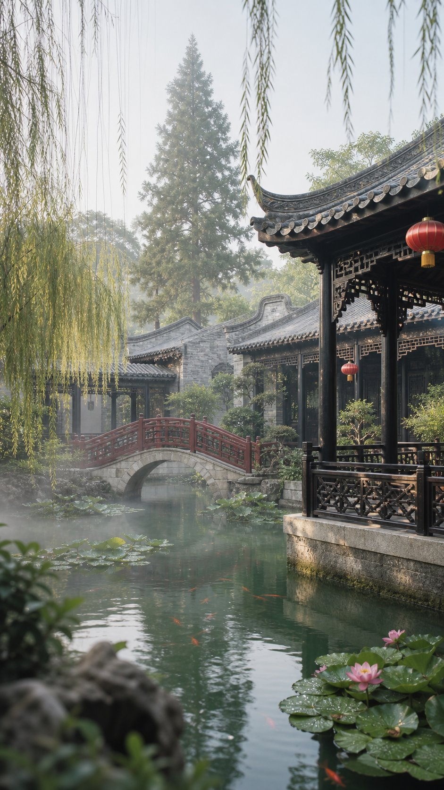
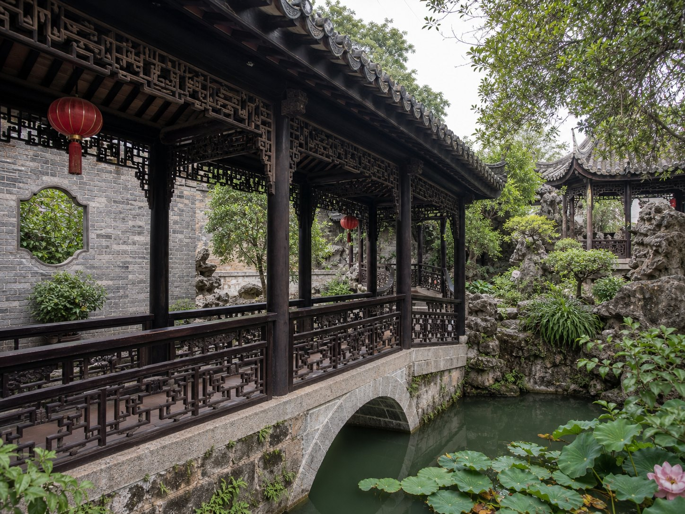
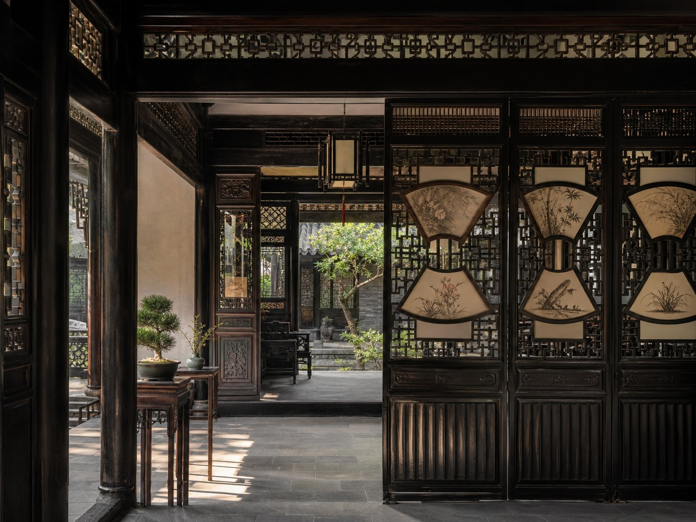
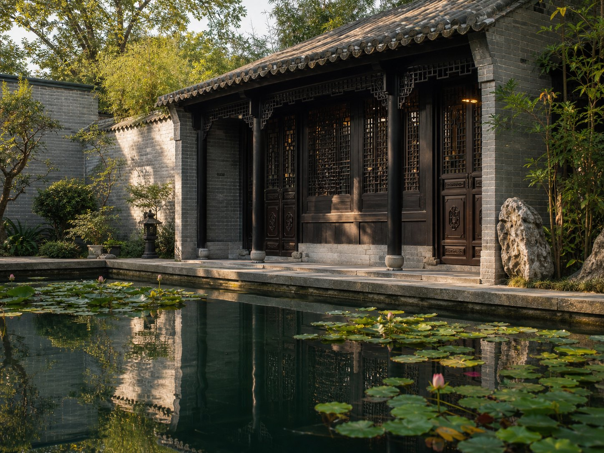
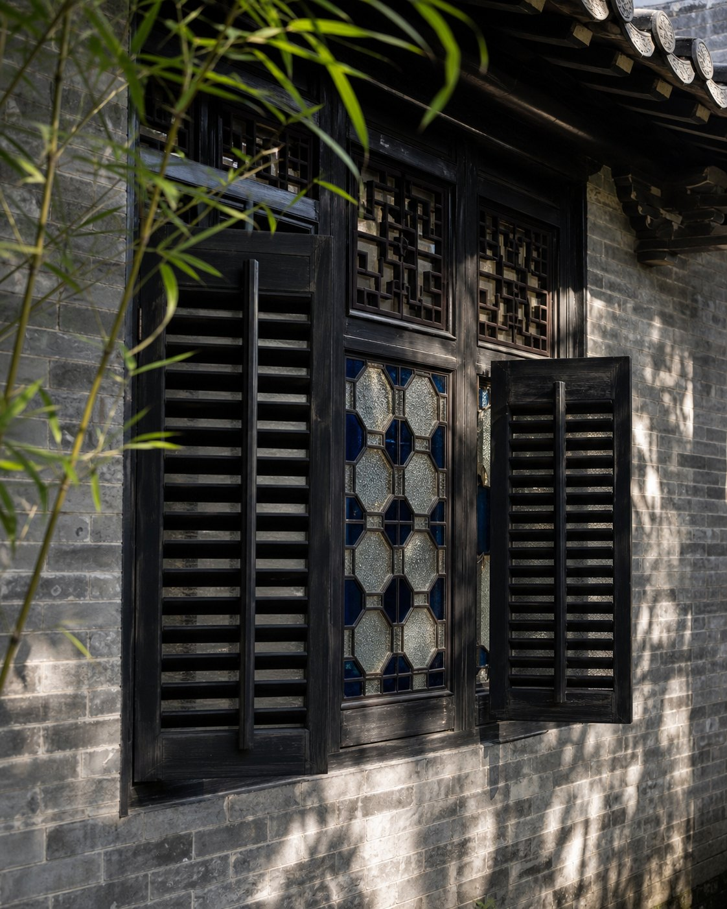
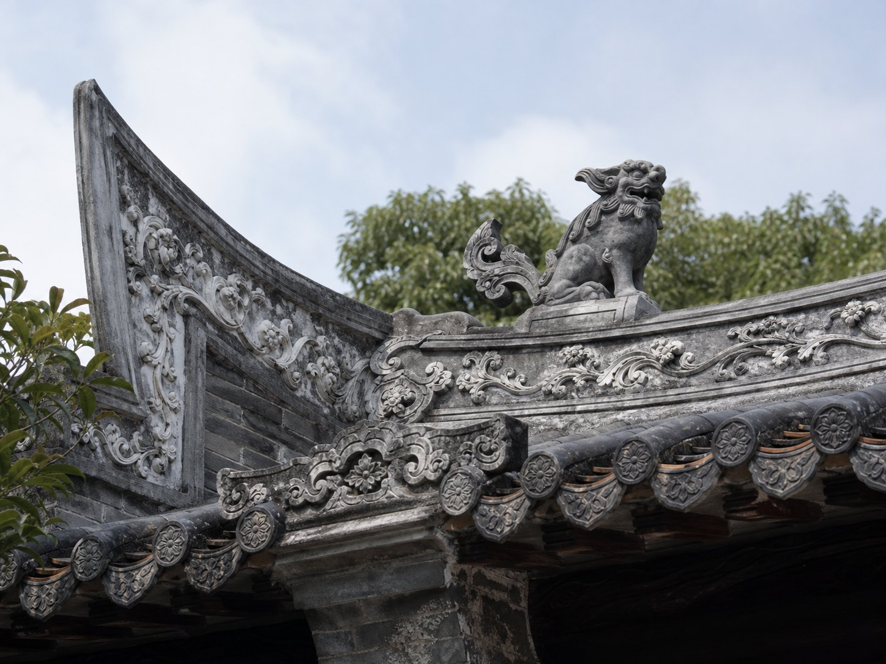
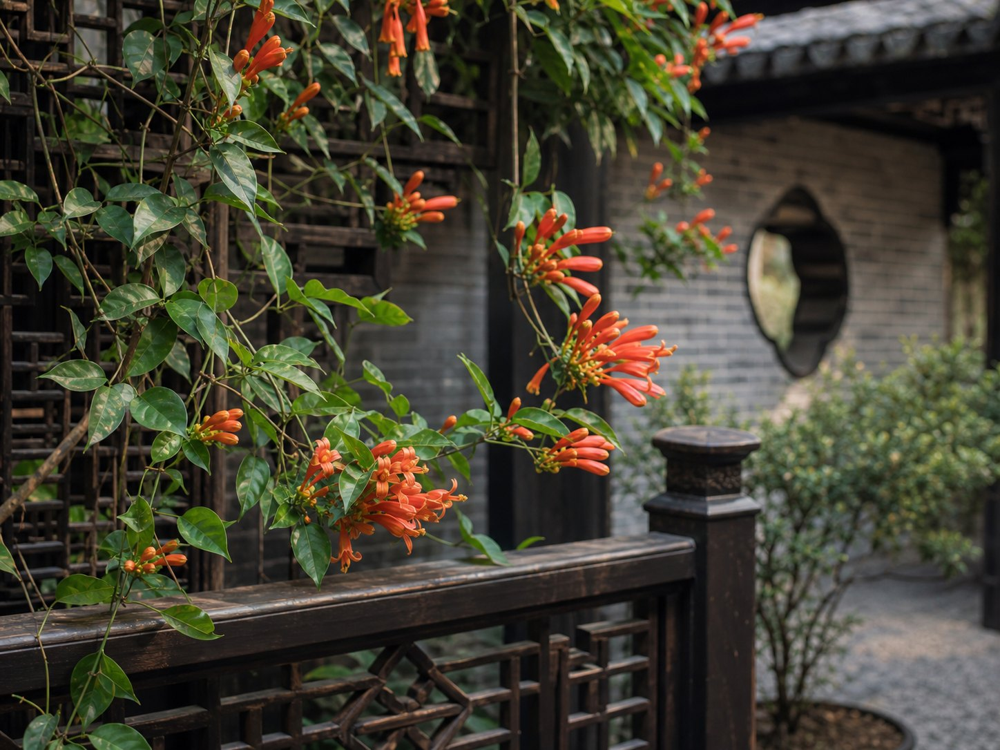
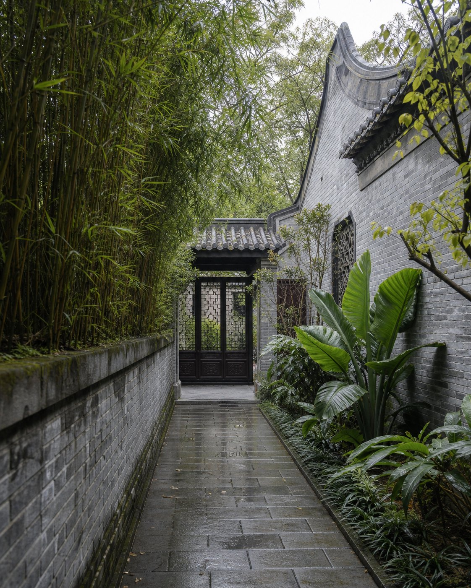

Lingnan Garden H5 Guide
余荫山房数字化导览
岭南园林空间、建筑与游览体验展示
从入口、廊桥、水榭、窗扇到水面倒影，把“小而深”的私家园林转化成一条可阅读、可拍摄、可分享的移动导览路线。
01 / 为什么值得看
一个小园，浓缩一套岭南空间智慧
余荫山房面积不大，却以“藏而不露、缩龙成寸”闻名。它不是靠宏大的尺度取胜，而是用水体、廊桥、亭榭、窗洞与植物，把游览路线压缩成不断转折的空间体验。
02 / 游线导览
从入口到水榭，按节点慢慢进入园林核心
这条路线不是精确测绘图，而是面向游客的导览阅读图：先识别入口，再进入水面、廊桥、水榭、假山和窗扇细部。
- 入口文保牌先建立历史与场所认知。
- 浣红跨绿廊桥桥、廊、亭、栏复合成可停留节点。
- 玲珑水榭八面开敞，让人在景中看景。
- 临水廊道遮阳避雨，也引导视线转折。
- 假山绿荫用山石和植物制造深度。
- 百叶窗细部理解岭南建筑的通风与遮阳。
03 / 空间读法
为什么小园能显得丰富？

廊桥是骨架
它既连接两岸，又划分东西；既是交通路径，也是停留、观水、取景的空间节点。

厅堂连接生活与观景
深柳堂一类空间让读书、会客、赏景在同一条轴线里展开，室内外不是完全割裂。

水面放大视觉尺度
临水建筑把书斋、池岸与倒影连在一起，实际不大的水面获得更深的空间感。
04 / 实地见闻图集
六张图，读懂园林里的层次
点击图片可放大预览，适合在手机上边看边对照游览。
05 / 拍照推荐
横向滑动，挑一个机位开始构图

窗格机位
把气候智慧拍成细节
百叶窗和满洲窗适合近拍，能说明通风、遮阳、采光与装饰的关系。

屋脊机位
抬头看灰塑与屋面线条
屋脊装饰能补足“只拍水面亭台”的单一视角，让建筑细部更有存在感。

花木机位
用花棚做前景
花木可以柔化砖墙和栏杆，也让园林从“古建照片”变成有季节感的画面。

游线机位
用窄巷制造纵深
夹墙、竹影和石路适合竖构图，能拍出“藏而不露”的进入感。
06 / 点击展开
园林元素卡片
每张卡片都是一个观察入口：看见景物，也看懂它为什么被放在这里。
池水不只好看，还能反射建筑、天空与植物，让小园显得更深。对岭南湿热气候来说，水面也带来清凉的心理感受。
浣红跨绿廊桥把园林分成东西两区，也让游客在过桥时短暂停留。它不是“过水”的附属物，而是游线的骨架。
百叶窗、隔扇窗和满洲窗让室内外保持“看得见、吹得到、走得通”的关系，回应通风、采光与遮阳需求。
垂柳、竹、乔木和花木共同提供阴影、前景和画面边界。游客拍照时，植物常常比建筑更先决定照片的层次。
07 / 旅游趋势观察
从“到此一游”变成“看懂、拍好、愿意分享”
年轻游客越来越关注体验感、照片传播性和文化解释。余荫山房的优势正好在于空间小、画面美、文化密度高，适合作为广州周边半日文化游样本。
城市微度假
半日可达，适合课程调研、摄影练习和传统文化研学。
拍照路线
把廊桥、水榭、窗格、倒影整理成明确机位，降低理解门槛。
文化解释
用短卡片解释“缩龙成寸”“藏而不露”和岭南气候适应。
08 / 数字化导览建议
让游客边走边理解，而不是拍完就离开
入口扫码打开，按 6 个节点完成路线。
标注倒影、框景、窗格、廊桥转角等机位。
把灰塑、窗格、题联、植物寓意变成可收集内容。
每个节点 30 秒解释一个问题。